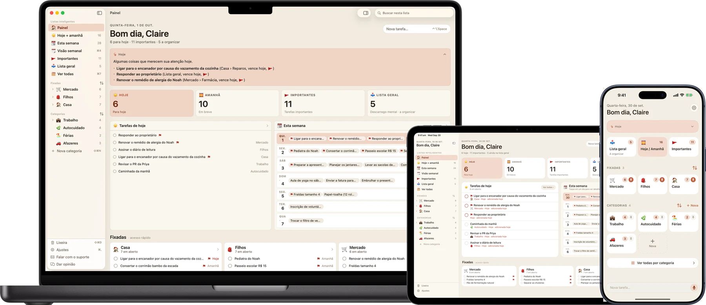
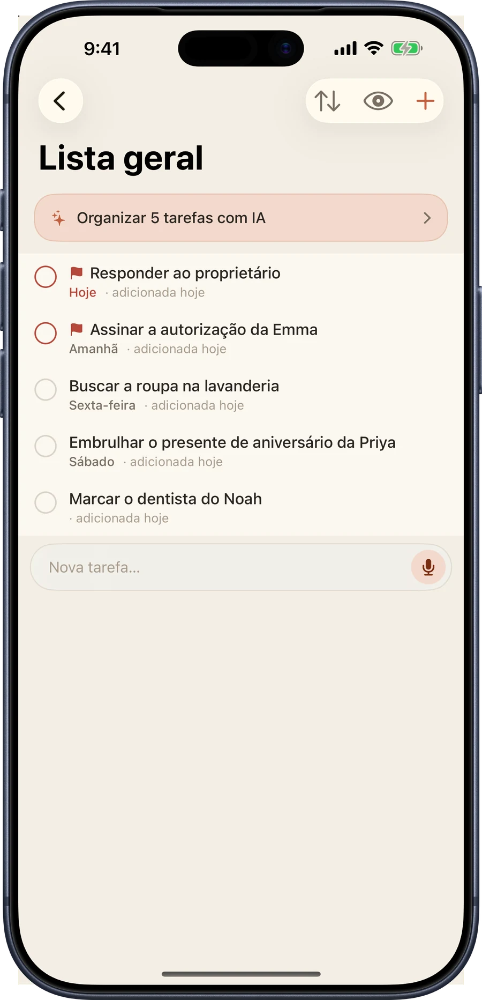
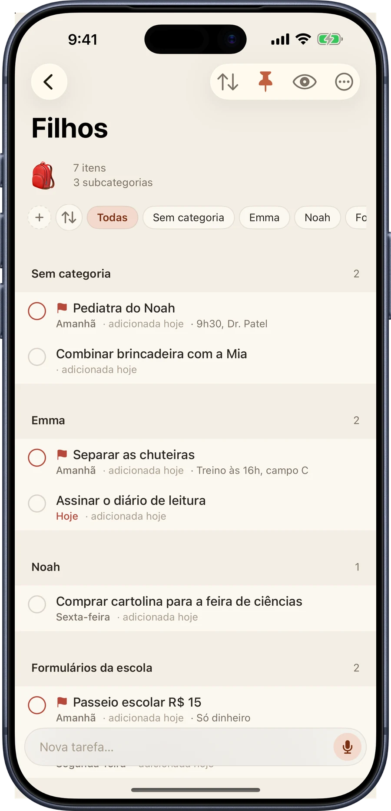
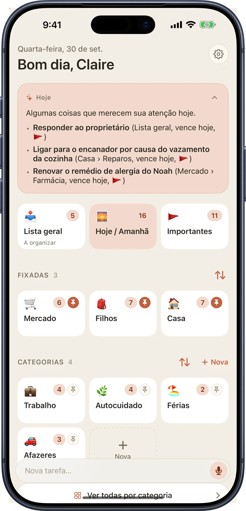
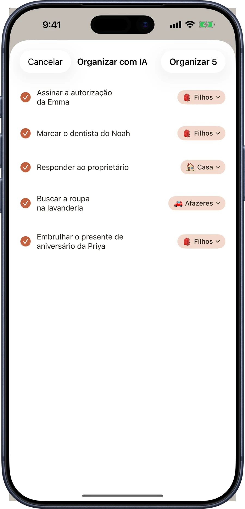
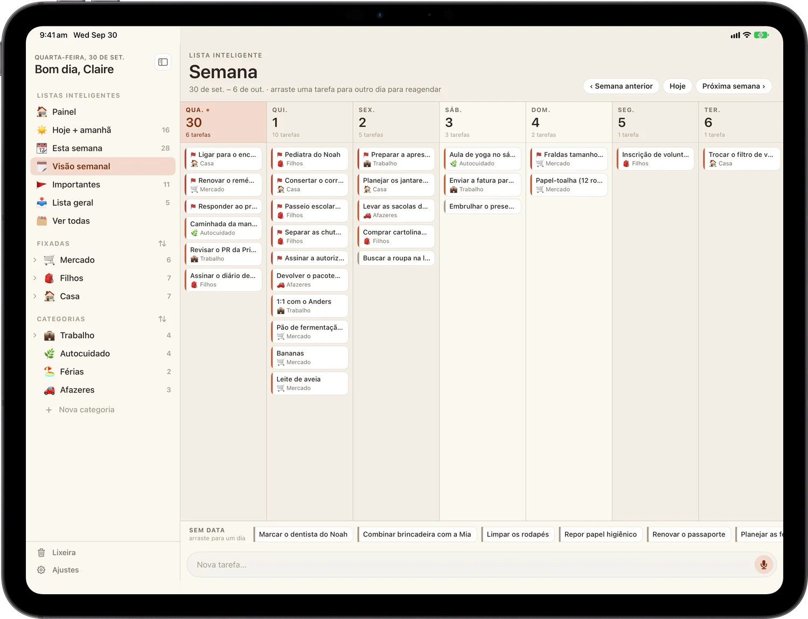
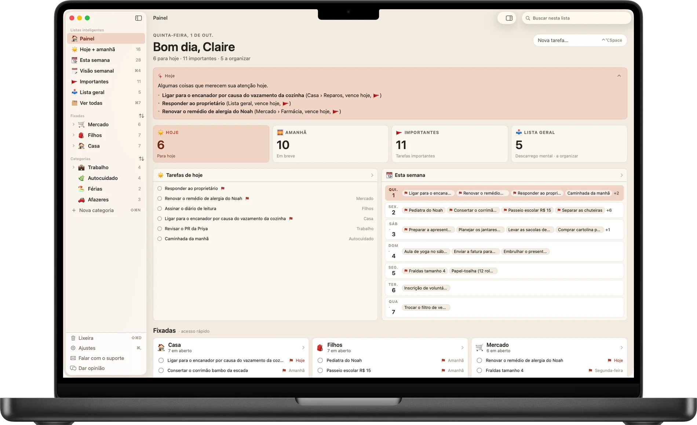

A lista que acompanha tudo o que você está carregando.
Um app de tarefas acolhedor e visual para quem faz malabarismo com o dia a dia. Anote tudo no instante em que vier à cabeça e organize quando quiser.
Download grátis.
iPhone, iPad e Mac. Sem conta, sem cadastro.
Uma lista, todas as telas

Anote
Jogue tudo agora. Organize depois.
A Lista geral é a sua caixa de entrada. Digite a coisa no segundo em que ela vier. Sem categoria, sem prazo, sem decisões antes. Depois organize quando quiser, talvez no domingo.
Anotar nunca atrapalha o fazer. A barra de adicionar está em todas as telas, e a Siri e os Atalhos também funcionam.

Organize
Categorias, e cômodos dentro delas.
Mercado, Filhos, Casa, Trabalho. Cada uma ganha seu próprio emoji e sua cor. Fixe as que você mais usa para ficarem no topo.
Quando uma lista enche, divida em subcategorias: Emma, Noah, Formulários da escola. Deslize para marcar o que importa, arraste para reordenar e defina um prazo para que nada passe batido.

Busy B Intelligence
Uma ajudinha com a pilha, tudo no seu aparelho.
O Busy B Pro traz três usos discretos de inteligência no aparelho, criados com a Apple Intelligence. Cada um roda no seu iPhone, iPad ou Mac. Nada sobre as suas tarefas é enviado a um servidor, nem nosso nem de ninguém, e nada do que você coloca no Busy B é usado para treinar um modelo.
- Resumo do dia: abra o app com uma leitura curta do que realmente importa hoje, tirada da sua própria lista
- Organizar com um toque: organize uma Lista geral cheia nas categorias certas com um único toque, com uma etapa de revisão antes de qualquer coisa se mover
- Pendências: um olhar sobre as tarefas que ficam paradas, cada uma com uma sugestão de próximo passo


O resumo do dia, a organização com um toque e as pendências exigem um aparelho compatível com a Apple Intelligence, ativada em Ajustes. Todo o resto do Busy B funciona em todos os aparelhos compatíveis.
Adicione por voz
Falou, adicionou.
O Busy B Pro coloca um microfone na barra de adicionar. Toque, diga a tarefa e ela é transcrita inteiramente no seu aparelho. Em um aparelho compatível com a Apple Intelligence, o Busy B também preenche a data, a categoria e a marcação antes de salvar.
Prefere nem abrir o app? A Siri também funciona, grátis para todos no iOS 27 ou posterior: "E aí, Siri, adicione buscar a roupa na lavanderia amanhã em Casa no Busy B."
No iPad
Um app de iPad de verdade, com três painéis de largura.
A Central de comando é um layout completo de três painéis: listas inteligentes, suas tarefas e os detalhes ao lado. A visão Semana mostra os sete dias de uma vez, e você arrasta uma tarefa de um dia para outro para reagendá-la.

No Mac
Um app nativo de Mac, com barra de menus e tudo.
Uma janela de verdade com atalhos de teclado de verdade (⌘1–⌘5) para ir direto a uma lista inteligente. A mesma barra lateral, as mesmas tarefas, a mesma conta do iCloud do seu telefone e do seu iPad.

O que tem dentro
Simples o bastante para abrir e começar a digitar.
Poderoso o bastante para organizar uma vida agitada.
- Lista geral: anote qualquer coisa, a qualquer hora, e organize quando quiser
- Hoje e Amanhã: veja exatamente o que importa agora
- Categorias: organize do seu jeito, desde o começo
- Subcategorias: aninhe e agrupe tarefas dentro de uma categoria
- Marcar e organizar: deslize para marcar o que é importante ou colocar em uma categoria
- Lembretes de vencimento: toques gentis para que nada passe batido
- Tarefas recorrentes: as que voltam toda semana
- Visão Semana: arraste tarefas entre os dias para reagendar
- Central de comando no iPad: um layout de três painéis feito para o iPad
- Sincronização com iCloud: suas tarefas, em todo lugar, automaticamente
- Nove temas: paletas feitas à mão, cada uma com modo escuro
- Resumo do dia: uma leitura no aparelho do que importa hoje
- Organizar com um toque: organize uma caixa de entrada inteira em categorias com um toque
- Pendências: traz à tona tarefas que ficam paradas
- App para Mac: uma janela nativa com sua própria barra de menus e atalhos de teclado
- Entrada por voz: toque no microfone, diga a tarefa e o Busy B preenche o resto
- Siri: "adicione uma tarefa ao Busy B" funciona sem as mãos, grátis para todos
Categorias ilimitadas, subcategorias, a coleção completa de temas, o Busy B Intelligence e a entrada por voz vêm com o Busy B Pro, disponível dentro do app. A Siri continua grátis para todos.
Onde funciona
A mesma lista, no aparelho que estiver mais perto.
Adicione no telefone, organize no iPad, revise no Mac. O iCloud mantém os três atualizados sem você precisar pensar nisso.
iPhone
Blocos para o dia, uma caixa de entrada geral e adicionar com um dedo só. iOS 18 ou posterior.
Disponível agoraiPad
A Central de comando de três painéis e a visão Semana. iPadOS 18 ou posterior.
Disponível agoraMac
Uma janela nativa, atalhos de teclado de verdade, sua própria barra de menus. macOS 15 ou posterior, Apple silicon.
Disponível agoraSua lista, só sua
Sem conta. Sem cadastro. Sem servidores nossos.
Seus dados de tarefas continuam seus, sincronizados de forma privada pela sua própria conta do iCloud, direto entre os seus aparelhos. Não há nada para criar, nada para entrar e nenhuma cópia da sua semana em um servidor nosso, porque não temos nenhum.
Comece pela lista de hoje.
Grátis na App Store.
iPhone, iPad e Mac.
Dúvidas, bugs ou uma ideia para o app? Escreva para support@busybplanner.com e uma pessoa responde, em geral em um ou dois dias. As dúvidas comuns já estão respondidas na página de suporte.